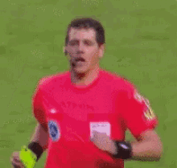

Ronaldinho e neymar ja jogaram juntos

Sim, Neymar e Ronaldinho Gaúcho jogaram juntos. Eles atuaram lado a lado na Seleção Brasileira entre 2010 e 2013.
Ronaldinho e neymar ja jogaram juntos
Sim, Neymar e Ronaldinho Gaúcho jogaram juntos. Eles atuaram lado a lado na Seleção Brasileira entre 2010 e 2013.

Sabia da forma bizarra de como os cartões surgiram no futebol?

Os cartões amarelo e vermelho surgiram devido a um incidente na Copa do Mundo de 1966. Durante um jogo entre Inglaterra e Argentina, o capitão argentino foi expulso pelo árbitro, mas houve um grande caos porque o juiz era alemão, o jogador não falava o idioma e ninguém em campo compreendeu a decisão.

Finais com duas bolas

Na primeira Copa do Mundo em 1930, Uruguai e Argentina não confiavam um no outro. A solução bizarra foi jogar cada tempo com uma bola diferente: o primeiro tempo foi jogado com a bola argentina, e o segundo, com a bola uruguaia.

Jogador com um braço só

O uruguaio Héctor Castro, que sofreu um acidente com uma serra elétrica e perdeu o antebraço direito na infância, foi um dos grandes craques da Celeste. Ele jogou e marcou o gol do título na final da mesma Copa de 1930.